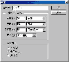
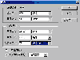

|
|
| 当前位置：电脑报电子版 > 1999 年 > 46 期 > OA专刊 > 明明白白分辨率（上） |
| 《 明明白白分辨率（上） 》 |
| 分辨率是和图像处理有关的一个重要概念，它是衡量图像细节表现能力的技术参数。但分辨率的表示方法有很多，其含义也各不相同。因此，正确理解分辨率在各种情况下的具体含义，弄清不同表示方法之间的相互关系是很有必要的。本文着重对几种常见的图像输入/输出设备的分辨率作简要介绍，然后介绍不同分辨率的图像，在不同分辨率的图像输入/输出设备上，输入/输出图像时的特点及相互关系。
一、有关分辨率的几个概念 要准确把握和理解分辨率的含义，弄清楚下面的几个概念是很有必要的。分辨率（Resolution）：包括设备分辨率、网屏分辨率、图形分辨率、扫描分辨率和位分辨率。 设备分辨率（Device Resolution）：又称输出分辨率，指的是各类输出设备每英寸上可产生的点数，如显示器、喷墨打印机、激光打印机、热蜡打印机、绘图仪的分辨率。这种分辨率通过DPI这个单位量来衡量，一般来讲，PC显示器的设备分辨率在60至120DPI之间。而打印设备的分辨率则在180至720DPI之间。 网屏分辨率（Screen Resolution）:又称网屏幕频率，指的是打印灰度级图形或分色所用的网屏上每英寸的点数。这种分辨率通过每英寸的行数（RPI）来标定。  图形分辨率（Image Resolution）:指的是图形中存储的信息量。这种分辨率有多种衡量方法，典型的是以每英寸的像素数（PPI）来衡量。图形分辨率和图形尺寸的值一起决定文件的大小及输出质量，该值越大图形文件所占用的磁盘空间也就越多。图形分辨率以比例关系影响着文件的大小，即文件大小与其图形分辨率的平方成正比。如果保持图形尺寸不变，将其图形分辨率提高一倍，则其文件大小增大为原来的四倍。图形分辨率也影响到图形在屏幕上的显示大小。如果在一台设备分辨率为72DPI的显示器上将图形分辨率从72PPI增大到144PPI（保持图形尺寸不变），那么该图形将以原图形实际尺寸的两倍显示在屏幕上。 扫描分辨率:指在扫描一幅图形之前所确定的分辨率，它将影响生成图形文件的质量和使用性能，它决定图形将以何种方式显示或打印。如果扫描图形用于640×480像素的屏幕显示，则扫描分辨率不必大于一般显示器屏幕的设备分辨率，即一般不超过120DPI。但大多数情况下，扫描图形是为以后在高分辨率的设备中输出而准备的。如果图形扫描分辨率过低，图形处理软件可能会用单个像素的色值去创造一些半色调的点，这会导致输出的效果粗糙。反之，如果扫描分辨率过高，则数字图形中会产生超过打印所需要的信息，不但减慢打印速度，而且在打印输出时就会使图形色调的细微过渡丢失。一般情况下，应使用打印输出的网屏分辨率、扫描和输出图形尺寸来计算正确的扫描分辨率。用输出图形的最大尺寸乘以网屏分辨率，然后再乘以网线数比率（一般为2：1），得到该图形所需像素总数。用像素总数除以扫描图形的最大尺寸即得到最优扫描分辨率，即：图形扫描分辨率=（输出图形最大尺寸×网屏分辨率×网线数比率）/扫描图形最大尺寸。 位分辨率（Bit Resolution）:又称位深，是用来衡量每个像素储存信息的位数。这种分辨率决定了每次在屏幕上可显示多少种色彩，一般常见的有8位、24位或32位色彩。有时我们也将位分辨率称为颜色深度。 二、几种图像输入/输出设备的分辨率 扫描仪、打印机、传真机、显示器、数码相机、投影机、电视、商务印刷等输入/输出设备以及鼠标、触摸屏等指示设备的分辨率有其各自的含义，弄清其含义，有利于我们选购和使用这些设备。读者必须注意，这里提到的分辨率指的是设备分辨率。1．扫描仪、打印机、传真机和显示器的分辨率 对扫描仪、打印机、传真机以及显示器等硬件设备来说，其分辨率用每英寸上可产生的点数即DPI（Dots Per Inch）来度量。  扫描仪的分辨率要从三个方面来确定：光学部分、硬件部分和软件部分。也就是说扫描仪的分辨率等于其光学部件的分辨率加上其自身通过硬件及软件进行处理分析所得到的分辨率。光学分辨率是扫描仪的光学部件在每平方英寸面积内所能捕捉到的实际的光点数, 是指扫描仪CCD的物理分辨率，也是扫描仪的真实分辨率，它的数值是由CCD的像素点除以扫描仪水平最大可扫尺寸得到的数值。分辨率为1200DPI的扫描仪，其光学部分的分辨率只占400～600DPI。扩充部分的分辨率（由硬件和软件所生成的）是通过计算机对图像进行分析，对空白部分进行科学填充所产生的（这一过程也叫插值处理）。光学扫描与输出是一对一的，扫描到什么，输出的就是什么。经过计算机软硬件处理之后，输出的图像就会变得更逼真，分辨率会更高。目前市面上出售的扫描仪大都具有对分辨率的软、硬件扩充功能。有的扫描仪广告上只写9600×9600DPI，这只是通过软件插值得到的最大分辨率，并不是扫描仪真正光学分辨率。所以对扫描仪来讲，其分辨率有光学分辨率（或称光学解析度）和最大分辨率之说。 我们说某台扫描仪的分辨率高达4800DPI（这个4800DPI是光学分辨率和软件差值处理的总和），是指用扫描仪输入图像时，在1平方英寸的扫描幅面上，可采集到4800×4800个像素点（Pixel）。1英寸见方的扫描区域，用4800DPI的分辨率扫描后生成的图像大小是4800Pixel×4800Pixel。在扫描图像时，扫描分辨率设得越高，生成的图像的效果就越精细，生成的图像文件也越大。 我们说某台打印机的分辨率为360DPI，是指在用该打印机输出图像时，在每英寸打印纸上可以打印出360个表征图像输出效果的色点。表示打印机分辨率的这个数越大，表征图像输出效果的色点就越小，输出的图像效果就越精细。对于大小固定的图像，打印机分辨率越大，打印出的图像尺寸就越小。打印机色点的大小只同打印机的硬件工艺有关，而与要输出图像的分辨率无关。 传真机兼有扫描（发送前）和打印（接收后）功能，在理解其分辨率时可参看扫描仪和打印机分辨率含义的相关部分。 我们说某个品牌的显示器的分辨率为80DPI，是指在显示器的有效显示范围内，显示器的的显像设备可以在每英寸荧光屏上产生80个光点。举个例子来说，一台14英寸的显示器（荧光屏对角线长度为14英寸），其点距为0.28mm，那么：显示器分辨率=25.3995mm/inch÷0.28mm/Dot≈90DPI（1 inch=25.3995mm）。显示器出厂时一般并不标出表征显示器分辨率的DPI值，只给出点距，我们根据上述公式即可算出显示器的分辨率。根据我们算出的DPI值，我们进而可以推算出显示器可支持的最高显示模式。假设该14英寸显示器荧光屏有效显示范围的对角线长度为11.5英寸，因显示器的水平方向和垂直方向的显示比例为4：3，故可设有效显示范围水平宽度为4X英寸，垂直高度为3X英寸，根据数学上的勾股定理，可得X=11.5÷5=2.3英寸。所以有效显示范围宽度为2.3×4=9.2英寸，垂直高度为2.3×3=6.8英寸。最高显示模式约为：800（9.2×90）×600（6.8×90），这时是用一个点（Dot）表示一个像素（pixel）。 上面主要讲述了扫描仪、打印机、传真机和显示器的设备分辨率。严格来讲，设备分辨率与用该设备处理的图像的分辨率是两个既有联系又有区别的概念。设备分辨率是由硬件设备的生产工艺决定的，尽管可以通过软件的方法调整有些设备的分辨率，但它们都有一个局限性很大的最高分辨率，用户不能对它有任何突破。在描述和理解设备分辨率时，我们必须借助其处理的图像的分辨率。图像的分辨率是描述图像本身精细程度的一个量度。对于扫描仪、打印机、传真机处理的图像，其分辨率以每英寸上的像素数即PPI（Pixels Per Inch）来衡量。用于计算机视频处理的图像，以水平和垂直方向上所能显示的像素数来表示分辨率，比如800×600、640×480等等。图像本身是否精细只与图像自身的分辨率有关，而与处理它的硬件设备的分辨率无关，但图像的处理结果是否精细却与处理它的设备的分辨率直接相关。举例来说，一幅90PPI的图像是比较精细的了，如果将它放在分辨率为40DPI的打印机上打印，打印效果也是相当糟糕的。对扫描仪来讲，其分辨率的高低与生成图像的精细程度成正比，但其分辨率只能为图像分辨率给出一个初始值（这个PPI值与扫描仪的分辨率的DPI的值是相等的），并不对图像的分辨率产生限制，我们可以用软件任意调整扫描生成的图像的分辨率（如图1、图2所示）。另外，需要注意的是，我们通常说一幅640×480的图像，说的是图像的大小，其中并不包括图像分辨率的含义。 2．数码相机的分辨率 数码相机分辨率的高低决定了所拍摄影像最终所能打印出高质量画面的大小，或在计算机显示器上所能显示画面的大小。数码相机分辨率的高低，取决于相机中CCD（Charge Coupled Device:电荷耦合器件）芯片上像素的多少，像素越多，分辨率越高。由此可见，数码相机的分辨也是由其生产工艺决定的，在出厂时就固定了的，用户只能选择不同分辨率的数码相机，却不能调整一台数码相机的分辨率。就同类数码相机而言，分辨率越高，相机档次越高，但高分辨率的相机生成的数据文件很大，对加工、处理的计算机的速度、内存和硬盘的容量以及相应软件都有较高的要求。 数码相机像素水平的高低与最终所能打印一定分辨率照片的尺寸，可用以下方法简单计算：假如彩色打印机的分辨率为N DPI ，数码相机水平像素为M，最大可打印出的照片为M÷N英寸。比如，打印机的分辨率为300DPI，水平像素为3600的数码相机所摄影像文件不作插值处理所能打印出的最大照片尺寸为12英寸（3600÷300）。很显然，要打印得到的数码照片的尺寸越大，就需要有更高像素水平的数码相机。计算显示尺寸的方法与打印尺寸的方法相同。 3．投影机的分辨率 投影机的分辨率常见的有两种表示方式，一种是以电视线（TV线）的方式表示，另外是以像素的方式表示。以电视线表示时，其分辨率的含义与电视相似，这种分辨率表示方式主要是为了匹配接入投影机的电视信号而提供的。以像素方式表示时通常表示为1024×768等形式，从某种意义上讲这种分辨率的限制是对输入投影机的VGA信号的行频及场频作一定要求。当VGA信号的行频或场频超过这个限制后，投影机就不能正常投显了。有关行频、场频与分辨率的关系读者可参看有关资料，这里不再赘述。 (杨玉琦 李欣) |
| 下载本期推荐软件 | 页 首 |
| 《电脑报》版权所有，电脑报网站编辑部设计制作发布 |